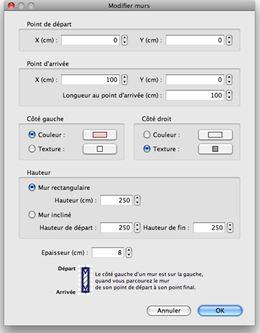

| Modification des murs | |||
Vous pouvez modifier la position et la longueur des murs d'un logement, soit avec la souris, soit avec le menu Plan > Modifier
les murs.... Quand un mur est sélectionné dans le plan, vous pouvez aussi déplacer l'une de ses extrémités, avec l'indicateur de taille qui apparaît à chaque extrémité du mur sélectionné.
|

|
Quand le pointeur de la souris survole le point de départ ou de fin du mur sélectionné,
celui-ci change d'aspect pour indiquer que vous pouvez glisser-déposer ce point pour le déplacer.
Pendant que vous appuyez sur le bouton de la souris, une info-bulle indique la longueur du mur. Un mur peut être aussi modifié grâce à son panneau, en double-cliquant sur ce mur dans le plan du logement, ou en choisissant Plan > Modifier les murs... après l'avoir sélectionné.  Dans le panneau du mur, vous pouvez modifier les coordonnées de ses points de départ et de fin,
les couleurs ou les textures de ses côtés gauche et droit, son épaisseur et sa hauteur. |
|